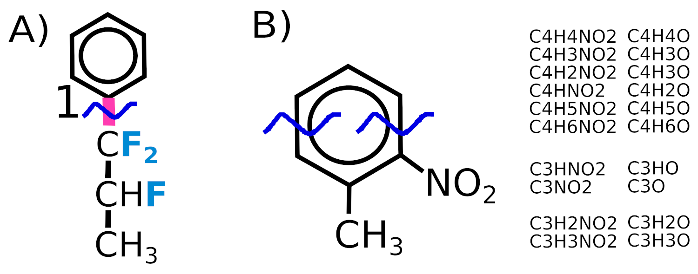

Electron ionization mass spectrometry (EI-MS) is widely used in combination with gas chromatography to obtain informative mass spectra that allow one to propose the structure of a molecule. Typically, EI-MS is used with a low-resolution mass detector. However, it is also possible to use EI-MS with a high-resolution mass detector, such as a time-of-flight or an Orbitrap. Many software packages allow one to effectively interpret collision cell fragmentation mass spectra (high resolution), but such mass spectra differ significantly from EI-MS mass spectra, mainly in that the fragment ion peaks do not have an isotopic distribution, as well as a more limited set of fragmentation pathways. Software for working with EI-MS mass spectra is most often focused only on working with low mass spectral resolution. This software package allows one to automatically interpret EI-MS mass spectra in automatic mode:
The structure of a molecule is considered a graph whose vertices are "heavy" (non-hydrogen) atoms and whose edges are bonds. Hydrogen atoms are considered in an "implicit" form - as a property of the corresponding "heavy" atom. All possible subgraphs (substructures) formed by "cutting" 1, 2, or 3 edges of the graph are considered. It is assumed that of the resulting fragments, only one carries a charge, the rest are "neutral" losses. The cleavages of all bonds and all possible cleavages of pairs and triplets of bonds are considered. Unlike the popular CFM-EI algorithm, we do not make an exception for bonds in rings. To break a ring, it is necessary to break at least 2 bonds; breaking one bond in a ring does not lead to the formation of fragments whose molecular formula differs from the original one. Thus, a set of molecular graphs corresponding to fragments is obtained. It should be noted that rearrangements that do not affect the molecular formula are not considered. For example, if we break two adjacent bonds in a benzene ring, then in our algorithm we get a linear fragment containing 5 carbon atoms. In practice, this fragment is cyclic, but since we do not consider a tree of fragmentations, but consider a one-time break of several bonds, then these rearrangements do not affect the m/z of the fragment.
Then, for each obtained "fragment ion" (molecular formula), the following rearrangements are considered:

The software tries to explain EACH peak (including isotopic peaks, we go through all peaks) of the mass spectrum according to the explanation levels 0-3. If there is a possible molecular formula for a peak (with an accuracy of mzThreshold) among the fragments listed in possibleIons, then this peak has an explanation level of 1 or higher. If such a formula is not found, then it gets a level of 0. Sometimes this can happen when several peaks overlap, and the centroid is significantly shifted from the real m/z of each of the peaks. After finding the molecular formula to which the peak corresponds, an isotopic distribution is considered for this peak, and for each peak of the isotopic distribution its theoretical intensity is calculated. If it is less than intensityThreshold, then we do not look for this isotopic peak. Otherwise, we look for an isotopic peak. For each isotopic peak with a theoretical intensity higher than intensityThreshold, we perform the following operations. If such a peak is in the spectrum (with an accuracy of mzThreshold), then we look at its intensity. If it differs from the theoretical one by no more than absoluteDifferenceForIsotopic OR by no more than percentDifferenceForIsotopic percent (the theoretical intensity is in the denominator when calculating the percentage error!) then we mark this peak as 3 (perfect), otherwise as 2 (found but not perfect). If the isotopic peak peak_iso is not found (with an accuracy of mzThreshold), then a search is performed for a more intense (intensity higher than the sought theoretical intensity of the isotopic peak) peak found_peak in the spectrum, such that Math.abs(mz_found_peak - mz_peak_iso) / mz_peak_iso < (1 / resolution), i.e. peak with which the original isotopic peak overlapped, then the isotopic peak is labeled as 2. As a result, the original peak whose interpretation was performed is labeled with explanation level 3 if ALL isotopic peaks (with theoretical intensity above intensityThreshold) are labeled as 3. The peak whose interpretation was performed is labeled with explanation level 2 if ALL isotopic peaks (with theoretical intensity above intensityThreshold) are labeled as 2 or 3. Otherwise, it is labeled as 1.
Algorithm for searching for a molecular ion. The peaks M+, [M-H+], [M-2H+] .... [2-xH+] where x is maxHLostMI, are searched for. For each, if the EXACT mass is found (with an accuracy of mzThreshold), then the corresponding peak gets level 1. Unlike the explainPeaks method, where all the peaks of the spectrum (both the main isotopic and minor, for example 13C) were considered one by one, here at the first stage only the main, most intense peaks of the isotopic distribution are taken. Then all the isotopic peaks are searched for this peak. For each isotopic peak. If such a peak is in the spectrum (with an accuracy of mzThreshold), then we look at its intensity. If it differs from the theoretical one by no more than absoluteDifferenceForIsotopic OR by no more than percentDifferenceForIsotopic percent (the theoretical intensity is in the denominator when calculating the percentage error!) then we mark this peak as found3 (perfect), otherwise as found2 (found but not perfect). If the isotopic peak peak_iso is not found (with an accuracy of mzThreshold), then a search is performed for a peak found_peak in the spectrum, such that Math.abs(mz_found_peak - mz_peak_iso) / mz_peak_iso < (1 / resolution), i.e. peak with which the original isotopic peak overlapped, then the isotopic peak is labeled as found2. Next, for the entire ion, we calculate the fraction of the ion current of the isotopic distribution labeled as found2 and as found3 (including the intensity of the main peak from which we started, it is always labeled found3). If the fraction of the intensity labeled as found3 exceeds fractionIsotopicThreshold, then the corresponding peak is labeled as explained at level 3. If this is not true, then if the sum of the fractions of the intensities labeled as found2 and found3 exceeds fractionIsotopicThreshold, then the corresponding peak is labeled as explained at level 2.
In general, three levels of identification are considered for each peak.
Level 1 - the molecular formula is selected, but some isotopic peaks are not found at all
Level 2 - isotopic peaks merge with other peaks. For example, the 13C peak of some ion X is superimposed (taking into account the resolution) on the main peak X + H. At not very high resolutions, such peaks may not be separated. This also includes cases of "incorrect" isotopic peak intensity, differing from the theoretically calculated one. This can also be caused by superposition and other factors.
Level 3 - all main isotopic peaks are observed correctly, up to the accuracy of mass determination.
Important! The fact that the peak is identified with an accuracy of 2 or 1 does NOT mean that there is something chemically wrong with it. It may simply be an overlapping of peaks. The fact that the peak is NOT identified (level 0) means that a non-standard\unexpected rearrangement has occurred, or that the peak is an impurity, or that the identification is incorrect. Peaks with level 2 and 1 require manual review. For a peak with level 3, you can be very sure that it does not contradict the assumed structure. The overlap of the 13C[M-H+] and [M+] peaks is very common of a molecular ion. In these cases, one should especially not mistakenly perceive explanation levels 1 and 2 as indicating incorrect identification.
The program shows for each peak the minimum number of bond breaks required to obtain such a molecular formula. Peaks marked as "all_fragments" are most likely the result of unusual rearrangements or there is something wrong with them. Another quality metric (very simple) that the program calculates is the fraction of the total ion current in area significantly above the heaviest isotopic peak of the molecular ion. This indicates an impurity or incorrect identification.
The software generates two files when interpreting a mass spectrum. A full file and a short file. The full file is a CSV file and contains the following fields for each peak
For ions [M+], [M-H+], [M-2H+] additional data are provided. For the main peaks of the isotopic distribution the following fields are provided:
For isotopic peaks the following fields are provided:
Also at the end of the explanation for each spectrum all peaks (including those that do not coincide at all in exact mass) near the molecular ion are given. This allows manual interpretation.
The short file is also CSV file and contains the following fields for each mass spectrum
The following CSV file can be used as input files:
<path to or name of a file with spectrum1>,<SMILES string1>,<comound1 name>
<path to or name of a file with spectrum2>,<SMILES string2>,<comound2 name>
etc.
for example
spectrum7.txt,n1ccncc1,pyrazine
spectrum8.txt,n1ccccc1,pyridine
...
This file is used if the spectra are specified in TXT, CSV, MSP formats. Both full paths and file names can be used (in this case, the path is specified using the "prefix" property).
Files containing mass spectra and associated information about the expected structure can also be used as input files: MSP1 or SDF. Detailed information about the format of these files is given below. Input file is a spectrum in TXT, CSV, MSP formats is an input file if SMILES string is specified via command line key or property file.
TXT - A file containing m/z values, intensities, and no other words or numbers. The string must contain N m/z-intensity pairs separated by any number of semicolons, colons, commas, parentheses (i.e., ")", "("), tabs, newlines, and spaces. For example, "80.1 999 81.0 48", where 999 and 48 are intensities. No headers, additional words etc allowed.
MSP - MSP file (NIST file format). One spectrum per file, structure information is ignored. The file must begin with the Name field, the last field before the peak list must be Num peaks. See also the documentation for NIST mssearch.
CSV - comma separated table with m/z and intensities. It obligatory contains header line. Everything above the header is ignored. m/z and relative intensities are in the corresponding columns (column numbers start from zero). Example
this line above header
m/z,intensity
80.1, 999
81.0, 48
MSP1 - MSP file (NIST file format). Multiple spectra per file, structure information is ignored. The file must begin with the Name field, the last field before the peak list must be "Num peaks". See also the documentation for NIST mssearch. Several options are supported for how the structure can be specified. A separate field containing the word "SMILES" in the name, for example just "SMILES" or "SMILES_can", the InChI field, or the Comments field in which (mass bank style) comments in quotes separated by spaces, for example in the comments field such fragments "SMILES=CC=C", "SMILES_can=CC=C", "InChI=InChI=1S/C3H6/c1-3-2/h3H,1H2,2H3".
SDF - SDF file format. Spectrum and structure in one file, file format equal to that used in NIST software: LIB2NIST, NIST MS Interpreter.
More detailed information about file formats is given in a separate file: fileformats.md/fileformats.html (or click on the corresponding button in the graphical user interface).
In this software, all parameters are set in a unified manner: using "property files" or via the command line interface. A property file contains one or more lines of the following type:
propertyName1 = propertyValue1
propertyName2 = propertyValue2
Comments are allowed. Everything after the # sign is ignored. In the case of property values (file names) containing spaces or =, quotation marks are not required. In the case of values with the # sign, the values must be enclosed in quotation marks. In the case of the command line interface, the properties are set as follows "--propertyName value". Default property values are taken from the properties.txt file, if an additional properties file is specified, it will override the default values. Values specified via the command line have even higher priority. All possible properties:
O = output.csv Output file name, where full interpretation of mass spectra will be written
O1 = out1.csv Shortened output file: one molecule - one line
fileFormat = CSV Format of input spectra: CSV, MSP (single-molecule), TXT, MSP1 (multi-molecule MSP with structural information included), SDF (multi-molecule, both mass spectra and structures)
inputFile = input.csv Input file name. For MSP1 and SDF - file with mass spetra and structures. For other file formats: CSV file with mass spectra files and corresponding SMILES strings (see above) if property SMILES is not specified. Otherwise, single-molecule file with mass spectrum.
prefix = ./ Prefix (path) where the spectrum files listed in the input file are located. Only for those file formats where one spectrum is one file.
mzThreshold = 0.0006 Accuracy of mass determination, Da
resolution = 30000 HRMS resolution
percentDifferenceForIsotopic = 10 The relative (percent!) error in the intensity of an isotopic peak at which it is considered "perfect"
absoluteDifferenceForIsotopic = 15 The absolute (base peak = 999) error in the intensity of an isotopic peak at which it is considered "perfect"
if observed intensity = X and theoretical = Y, the isotopic peak is "perfect" if 100*(X-Y)/Y < percentDifferenceForIsotopic OR if (X-Y) < absoluteDifferenceForIsotopic
intensityThreshold = 5 The intensity of an isotopic peak below which we do not attempt to search for an isotopic peak (base peak = 999)
maxHDrift = 2 maximum number of H-atoms that can migrate TO ion
maxHLoss = 3 maximum additional loss of H-atoms
maxFMigration = 2 max number of fluorine atoms that can migrate
maxHLostMI = 2 Consider M, M-H, M-2H when considering molecular ion. It is not recommended to change
fractionIsotopicThreshold = 0.96 The fraction of isotopic peak intensities that must be well explained when explaining the molecular ion peak
csvLoadIntensityThreshold = 1 threshold, peaks with intensity below which are discarded during the initial loading of the spectrum (base peak (peak with maximum intensity) = 999)
thresholdGenerateIsotopic = 0.0001 threshold, peaks with intensity below which are discarded when calculating the isotopic distribution. The intensity is calculated from the ENTIRE intensity of the isotopic distribution (not from the base peak). It is not recommended to change
csvSpectrumHeader = m/z,Intensity CSV table header, below which are m/z and intensity values. All lines above the header are ignored
mzColumn = 0 The column number in the CSV table that contains the m/z values. The FIRST column is number 0!
intensColumn = 1 The column number in the CSV table that contains the intensity values. The FIRST column is number 0!
SMILES =
name =
SMILES by default it should be empty (SMILES =, nothing after "="). If the SMILES string is given, the input file is assumed to contain ONE spectrum of this compound. All structural information in the input files is ignored.
usage: --option1 <argument1> --option1 <argument1> ...
Options:
--propFile file with properties. All other options can be also set there.
by default properties.txt file is used.
--SMILES SMILES string (structures can also be provided in input file)
--name compound name (structures can also be provided in input file)
-O output file name, where full interpretation of mass spectra
will be written
-O1 shortened output file: one molecule - one line.
--fileFormat format of input spectra
--inputFile input file name
--prefix prefix (path) where the spectrum files listed in the input file are
located. Only for those file formats where one spectrum is one file.
Explanation of mass spectral peaks (high resolution)
--mzThreshold accuracy of mass determination, Da
--resolution HRMS resolution
--percentDifferenceForIsotopic the relative (percent) error in the intensity
of an isotopic peak at which it is considered
"perfect"
--absoluteDifferenceForIsotopic the absolute (base peak = 999) error in the
intensity of an isotopic peak at which it is
considered "perfect"
If observed intensity = X and theoretical = Y, the isotopic peak is "perfect"
if 100*(X-Y)/Y < percentDifferenceForIsotopic *OR* if
(X-Y) < absoluteDifferenceForIsotopic
--intensityThreshold = 5 the intensity of an isotopic peak below
which we do not attempt to search for an
isotopic peak (base peak = 999)
Atom migrations
--maxHDrift maximum number of H-atoms that can migrate
TO ion
--maxHLoss maximum additional loss of H-atoms
--maxFMigration max number of fluorine atoms that can migrate
Explaining molecular ion peak
--maxHLostMI consider M, M-H ... M-xH when considering
molecular ion (usually 2)
--fractionIsotopicThreshold The fraction of isotopic peak intensities
that must be well explained when explaining
the molecular ion peak
General mass spectrometry settings
--csvLoadIntensityThreshold threshold, peaks with intensity below which
are discarded during the initial loading of
the spectrum (base peak (peak with maximum
intensity) = 999)
--thresholdGenerateIsotopic threshold, peaks with intensity below which
are discarded when calculating the isotopic
distribution. The intensity is calculated
from the ENTIRE intensity of the isotopic
distribution (not from the base peak).
CSV file load options
--csvSpectrumHeader CSV table header, below which are m/z and
intensity values. All lines above the header
are ignored.
--mzColumn The column number in the CSV table that
contains the m/z values. The FIRST column is
number 0!
--intensColumn The column number in the CSV table that
contains the intensity values. The FIRST
column is number 0!
There are also two versions of the graphical user interface available: simple_gui and batch_gui. In simple_gui, the mass spectrum must be copied in TXT format (alternating m/z and intensity values separated by newlines, spaces, semicolons, brackets, colons). All parameters and settings are described above. Graphical user interfaces are self-explainatory.